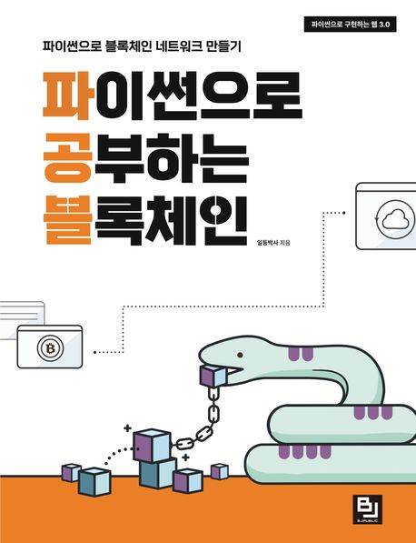
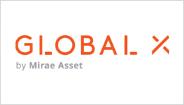
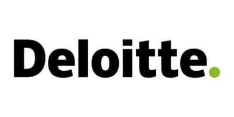

|
Seung Il Lee I'm Seung Il Lee. My research focuses on multimodal language models and AI agents. I am interested in leveraging multimodal models to manage and control intelligent agents. |
{kind=link}
Publications |

|
Token-Based Affordance Grounding with Large Vision-Language Models
Seung Il Lee, Qinqian Lei, Daguang Xu, Dong Yang, Robby T. Tan, Yixin Chen, Bo Wang European Conference on Computer Vision (ECCV), 2026 project page / arXiv / code We propose a token-based affordance grounding framework using Large Vision-Language Models (LVLMs) to localize action-supporting regions in an image. |
|
 |
Blockchains Studied with Python: Building a Blockchain Network with
Python
DrFirst BJPublic, 2023 Kyobo Book Authored a technical book covering Web 3.0 implementation, blockchain network architecture, and hands-on Python development. |
Professional Experience |
|
 |
Principal AI Engineer / Wealthspot (Mirae Asset Global Investments US) — Seoul /
Remote
Dec 2024 – Present
|
|
|
Senior AI Engineer / Mirae Asset Securities — Seoul, South Korea
Mar 2021 – Dec 2024
|

|
Data Scientist Lead / Carvi (AI Mobility Startup) — Seoul, South Korea
Sep 2018 – Feb 2021
|

|
Data Engineer / Analyst / Samsung Electronics — Hwasung, South Korea
Jan 2015 – Aug 2018
|
|
 |
Research Assistant / Deloitte Consulting — Seoul, South Korea
Sep 2013 – Nov 2013
|
Honors & Awards |
|
|
Feel free to steal this website's source code. |